General Notes
The carbon capture and sequestration (CCS) sheet handles various calculations relating to the quantity of CO2 sequestered, the amount of fuel burned to power this sequestration, the cost of the capital equipment needed to sequester this amount of carbon, and the O&M cost for this equipment. All of these results are disaggregated between the electricity sector (where they are divided between various types of fuel-burning power plants, such as coal, natural gas, and biomass plants) and the industry sector (where they are divided up by industry). These results are then used on the sheets for the electricity and industry sectors in the model. Final emissions and cash flow calculations are not conducted on the CCS sheet; its purpose is to do supporting calculations for the other sectors. Italics, which are used in the model (in all sheets) to denote when a variable is going to or coming from a different sector of the model, are useful for seeing which results on the CCS sheet are used on other sheets.
Quantity of CO2 Sequestered
We start by calculating the fration of the CCS potential that is achieved. We take in a BAU fraction of potential (subscripted by sector) as input data, and a user-set policy lever specifies a fraction of the additional (i.e. remaining) potential that is achieved in the policy case. In the event of an exogenous GDP adjustment (that is, to simulate a recession that is not reflected in the BAU input data), we adjust downward the achievement of CCS potential in the BAU case and increase the remaining potential accordingly, as a recession likely reduces achievement of CCS in the absence of CCS-promoting policy.
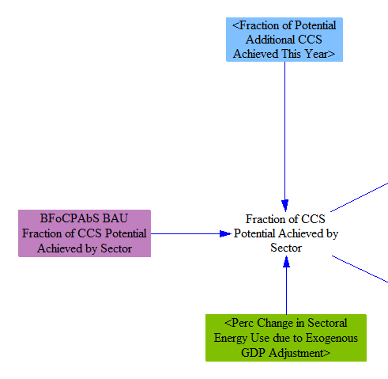
Next, we convert the fraction of CCS potential to a fraction of CO2 captured. Each power plant type (e.g. coal, gas, etc.) and each industry (e.g. cement, iron and steel, etc.) has its CO2 capture potential specified individually in input data. For example, one industry might have the potential to capture 90% of its CO2 emissions, while another industry might have the potential to capture 95% of its CO2 emissions. Multiplying these potentials by the fraction of potential achieved gives the fraction of CO2 captured.
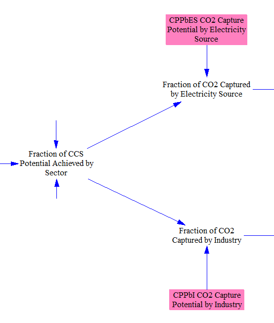
We multiply the fraction of CO2 captured by the amount of CO2 emissions from each power plant type and from each industry. This includes industrial CO2 process emissions, such as CO2 from the breakdown of limestone to make clinker, the main ingredient in cement. It also includes the CO2 emissions from fuel burned to power the CCS process itself, with a one-timestep delay to avoid circularity (because the amount of fuel burned to power the CCS process itself depends on the amount of CO2 captured).
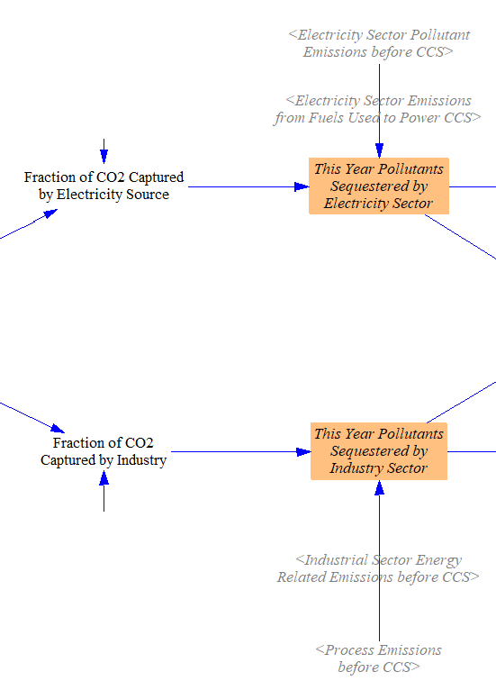
We sum up the total amount of CO2 sequestered, for use in the endogenous learning calculations.
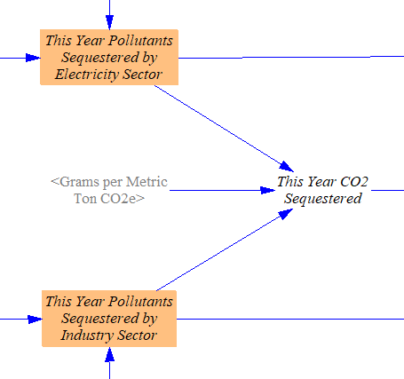
We introduce a one-timestep delay in the sequestration quantities, which will be used to calculate the fuel use for the CCS process (and associated CCS costs), to avoid circularity. We also calculate the year-over-year increase in CO2 captured by each power plant type and each industry in order to help us allocate new CCS capital equipment costs, described below.
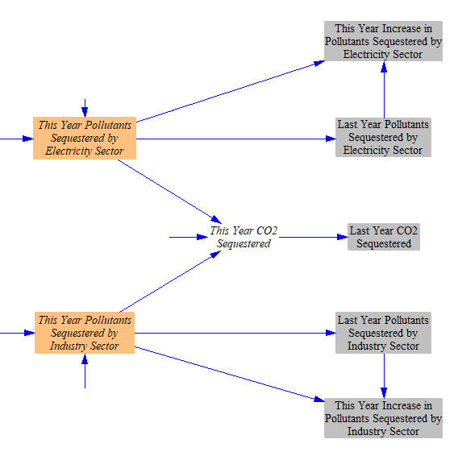
Capital Costs of CCS Equipment
The cost of new CCS capital equipment s based on an endogenous learning curve, so that it is cheaper the more CCS equipment has been deployed. We use a percentage decline per doubling of capacity to determine the cost of CCS equipment in the current model year relative to the first year. That is multiplied by the cost of CCS equipment in the first year to find the current year cost. The user-specified R&D policy that reduces CCS equipment cost is also applied at this stage.
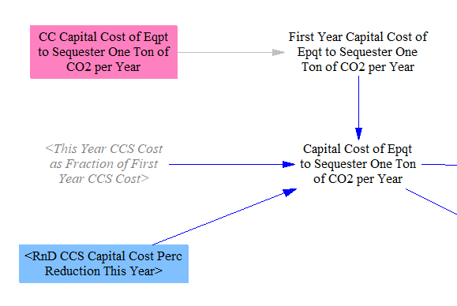
Unlike O&M costs, capital equipment costs are only paid on newly-purchased CCS equipment, not on equipment that was installed in a prior model year. Therefore, we use the year-over-year increase in quantity of CO2 captured.
This increase is calculated separately for each power plant type and each industry, to allow for the possibility that use of CCS is growing for certain plant types or industries, even as CCS usage remains flat or even decreases for other plant types or industries.
The main way by which CCS usage can decline is if all of the power plants of a given type are being retired due to the policy package. For example, completely eliminating all coal plants will retire any CCS capacity associated with those coal plants. It is also possible for a user to specify an increase followed by a reduction in CCS use in his/her policy settings. However, in most situations, there will not be CCS equipment retirements during a model run, because the lifetime of CCS equipment is long (25-40 years) and any preexisting CCS equipment is relatively new, so retirements during the course of the model run are not significant.
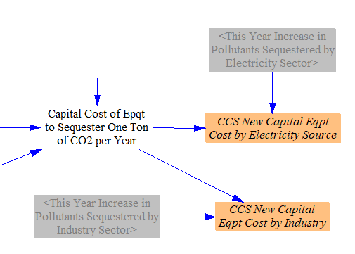
O&M Costs of CCS Equipment
Next, we calculate the O&M costs of CCS. We represent the amount of CCS equipment in terms of its sequestration capacity: that is, the amount of equipment necessary to sequester a particular mass of CO2 per year.
O&M must be paid on all operating CCS equipment. Therefore, we take the total amount of sequestration occurring in the modeled year and multiply by the O&M cost per ton of CO2 sequestered to obtain the total amount of O&M costs incurred in the modeled year.
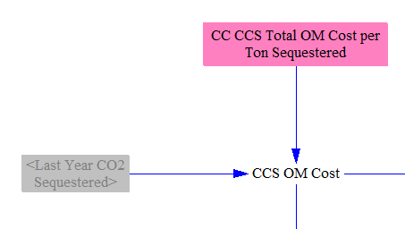
CCS O&M costs are then divided up between different power plant types and different industries depending on the quantity of CO2 sequestered by each of these power plant types and industries.
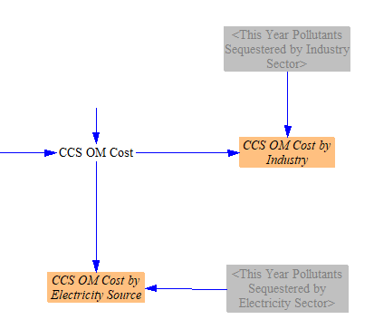
Fuel Used to Power the Sequestration Process
Lastly, we determine how much of which types of fuels are consumed to power the sequestration process. First, we take the total amount of CO2 sequestered and multiply by the amount of energy needed to sequester one ton of CO2, adjusted by the user-selected R&D setting for CCS fuel efficiency. These data are already disaggregated by sector (Electricity and Industry).
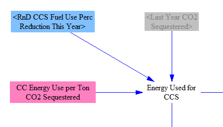
For the electricity sector, we allocate the energy use to power the CCS process to power plant types proportionally to the amount of CCS performed by each power plant type. We assume that each type of plant uses the fuel type that it normally burns to power its CCS process (that is, a coal power plant will power the CCS process by burning coal, not by burning natural gas, using solar panels, etc.).
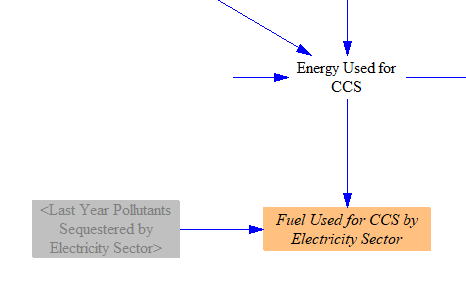
For the industry sector, we divide up the energy use by industry based on the quantity of CO2 sequestered by each industry. Unlike the electricity sector, each industry uses multiple fuel types, so we need to further disaggregate the energy use by fuel type. We assume each industry uses fuel types to power CCS in proportion to its use of fuel types for other purposes.
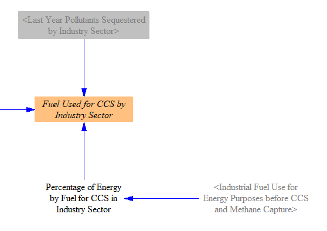